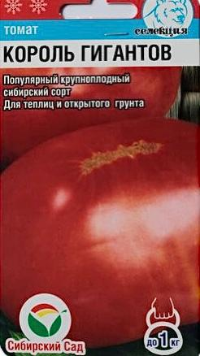

Король Гигантов

Томат Король Гигантов - это крупноплодный сорт сибирских
селекционеров. По праву может считаться королем среди томатов по
всем основным параметрам: крупноплодность, урожайность, вкусовые
качества. Плоды округлые, красные, весом до 1000 г, лежкие, сладкие.
Томаты Король Гигантов хороши как для салатов, так и для зимних
заготовок. Растение индетерминантное, высотой 1-1,7 м в зависимости
от условий выращивания. Урожай с одного куста достигает 7-8 кг.
Томат Король Гигантов выращивается в открытом грунте и в теплицах,
на 1 кв.м размещают 2-3 растения.